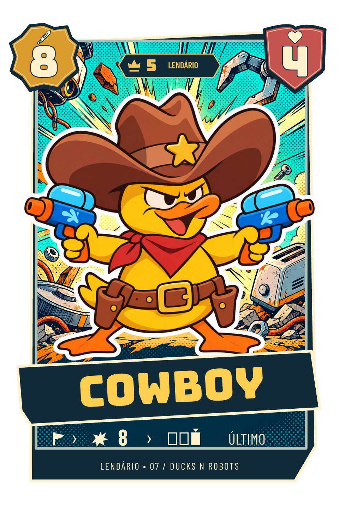
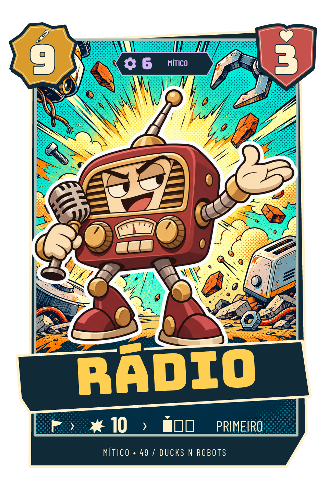

A arte toma a frente.
Ataque à esquerda. Vida à direita. Clique na carta para consultar os detalhes.
Antes / agora
A mesma arte e os mesmos valores. A identificação e a regra passam para a consulta.
IMPACTO ANTERIOR
IMPACTO REFINADO
IMPACTO ANTERIOR
IMPACTO REFINADO
Leitura em jogo
220 px e 130 px. Na miniatura de 54 px de largura, os dois números continuam nos mesmos cantos; toque para consultar.
Direção e referência
Janela recuada, silhueta atravessando as laterais e sombra separando os planos. O fundo anterior foi reduzido a uma camada de textura, liberando o personagem. Os contadores mantêm posição, cor e recorte próprios, sem símbolos.
O case de Marvel Snap na Unity documenta a técnica de frame break. Aqui ela orienta a composição estática em camadas; a arte original permanece intacta.